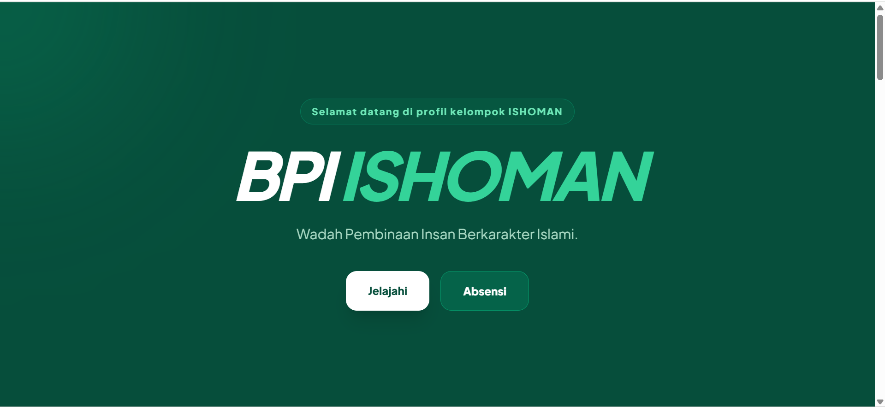
Website profil untuk mengenalkan nama kelompok serta filosofinya, dan struktur suatu BPI sekolah.
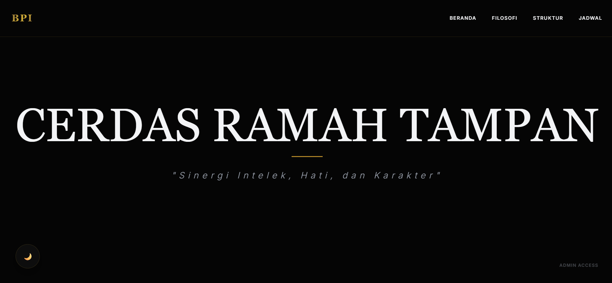
Website profil untuk mengenalkan nama kelompok serta filosofinya, dan struktur suatu BPI sekolah.
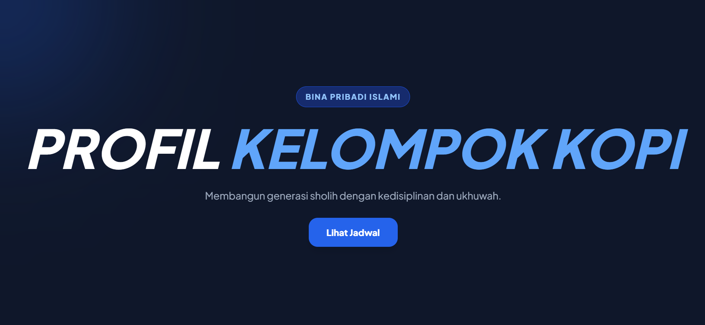
Website profil untuk mengenalkan nama kelompok serta filosofinya, dan struktur suatu BPI sekolah.
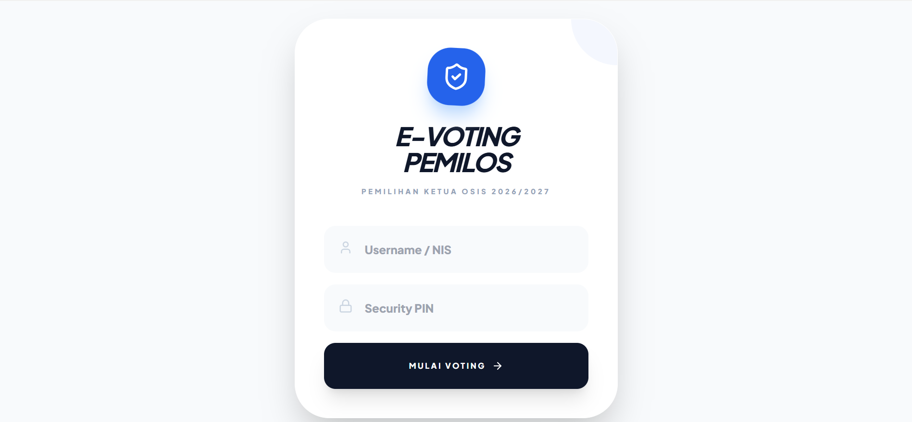
Aplikasi sistem E-Voting ketua OSIS dan Wakil Ketua OSIS melalui platform Digital.
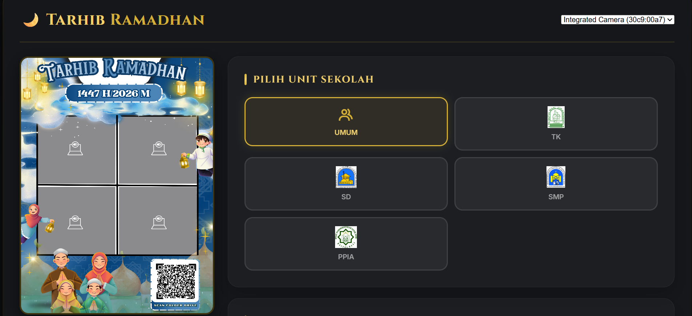
Sistem Photobooth online menggunakan webcam laptop maupun perangkat kamera yang tersambung.
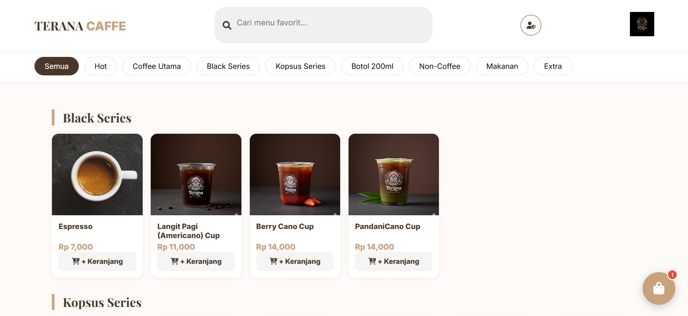
Display produk interaktif dengan kategori dan detail harga yang responsif (Terana Coffee).
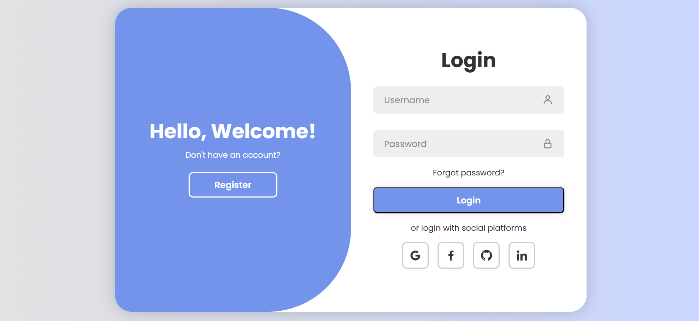
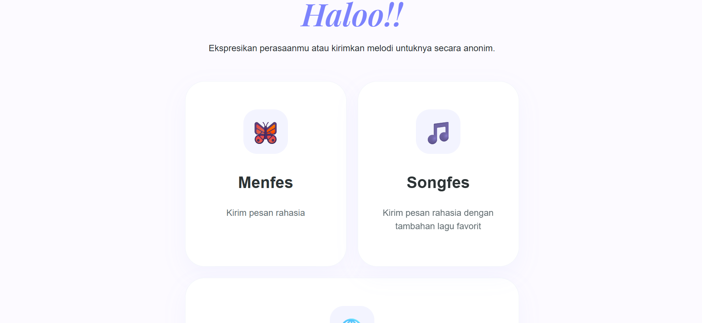
Platform pengiriman pesan anonim untuk berbagi perasaan atau lagu favorit secara online.
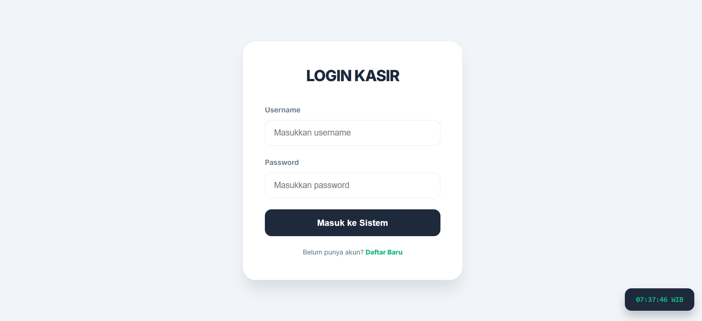
Aplikasi sistem pemesanan warkop sederhana untuk menghitung total pesanan dan pembayaran di warkop.
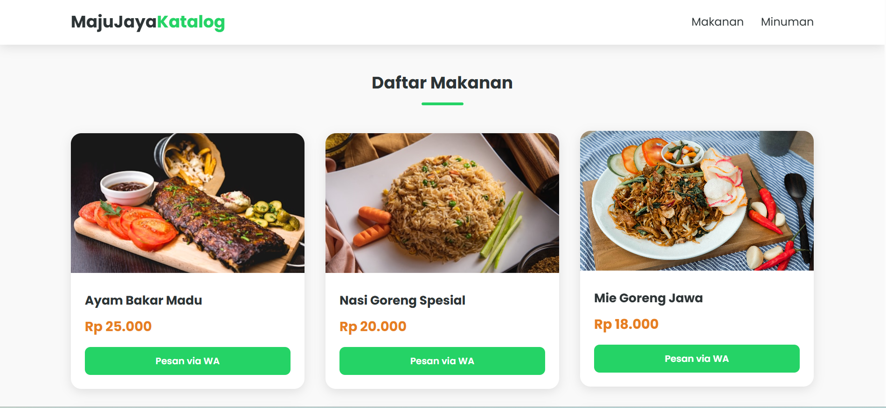
Digitalisasi produk lokal untuk membantu promosi pelaku usaha kecil menengah restauran.
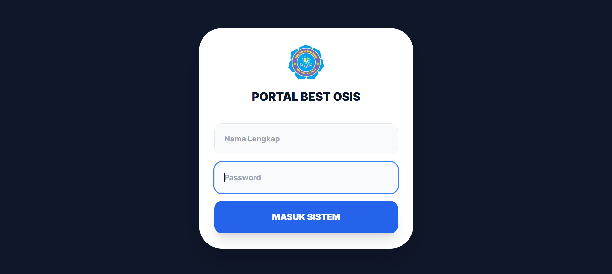
Dashboard manajemen untuk internal pengurus OSIS dalam mengelola agenda dan rapat.
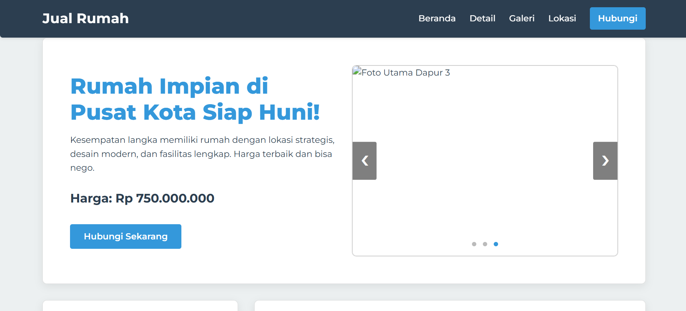
Website listing rumah dengan fitur filter harga dan spesifikasi bangunan lengkap.
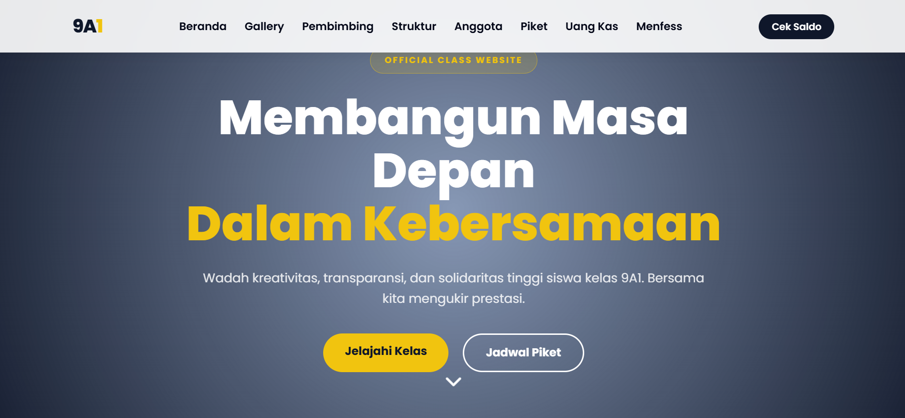
Wadah dokumentasi kebersamaan kelas, jadwal piket, dan struktur organisasi kelas.
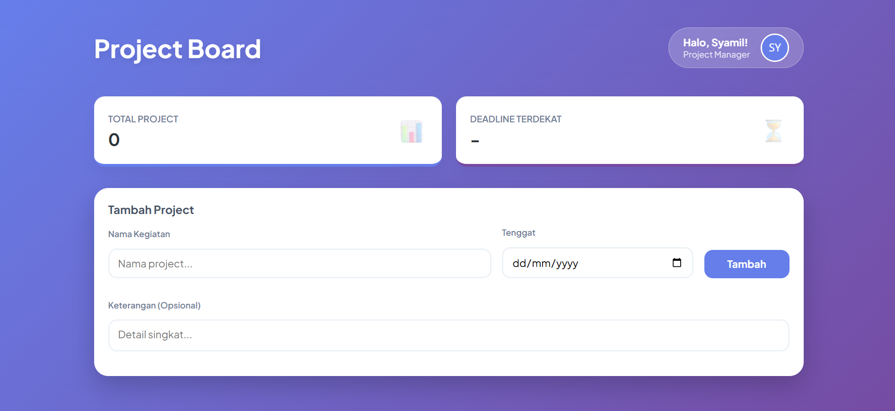
Aplikasi to-do list untuk mengatur produktivitas dengan fitur ceklis dan hapus tugas.
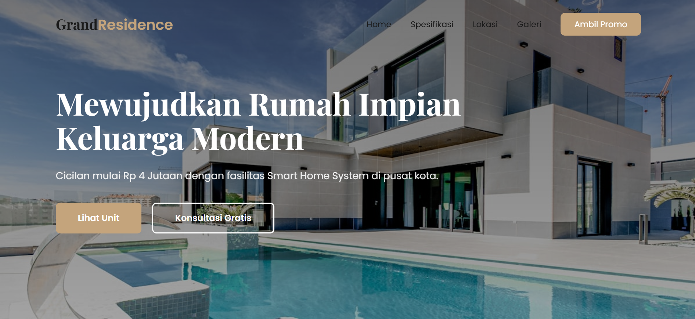
Halaman promosi real estate yang modern untuk meningkatkan konversi penjualan rumah.
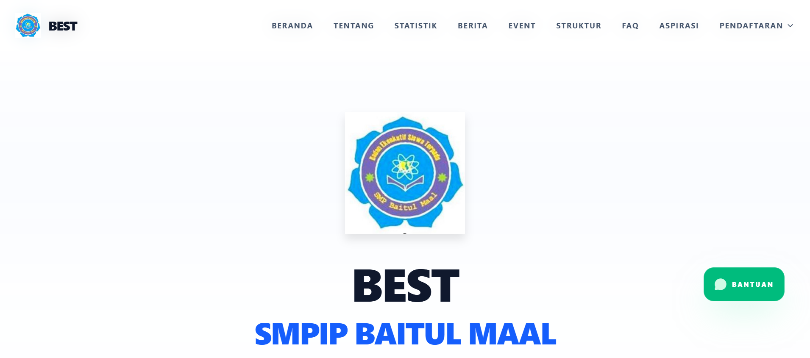
Website informasi kegiatan OSIS bagi masyarakat luar sekolah dan calon siswa baru.
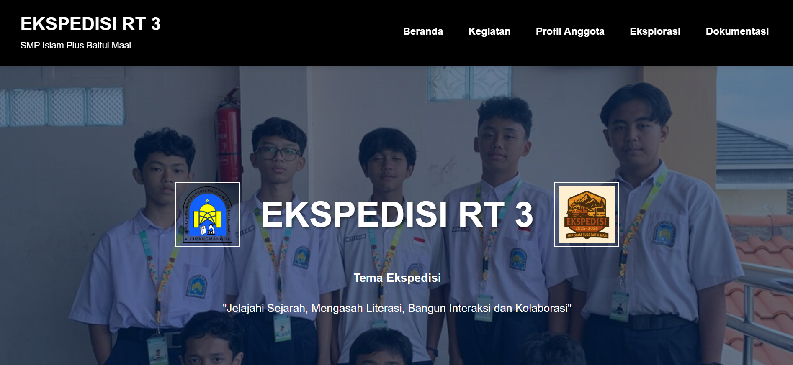
Sistem pengarsipan foto dan laporan kegiatan ekspedisi sekolah secara digital.